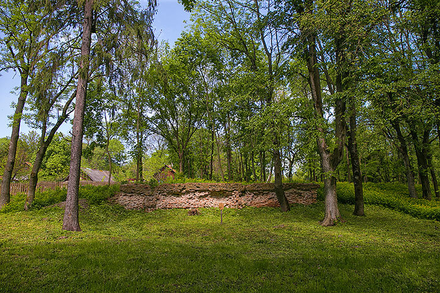

Замок Вишневецких (бел. Замак Вішнявецкіх), парк с фрагментами стены замка Вишневецких (бел. парк з рэшткамі сцяны замка Вішнявецкіх), Двор-Городищенский замок (бел. Двор-Гарадзішчанскі замак), Тельманский замок (бел. Тэльманскі замак) — оборонительное укрепление и резиденция в деревне Тельман (до советской власти Двор-Городище) Брагинского района Гомельской области Республики Беларусь. Находится в южной части деревни Тельман (Гомельская область), на правом берегу реки Брагинки.
Точная дата строительства замка неизвестна. С XVI века эти земли принадлежали князьям Вишневецким, которые и построили здесь замок (по другим источникам — просто разместились в уже имевшемся на этих землях Старом замке). Также местные краеведы утверждают, что именно в этом замке некоторое время жили люди-легенды Смутного времени Лжедмитрий I и Александр Юзеф Лисовский.
В 1574 году местечко Брагин с прилегающими волостями были подарены королём Польским и великим князем Литовским Генрихом Валуа литовским магнатам Александру и Михаилу Вишневецким (Збаражским). На этой территории были построены 2 замка: в ставшем княжеской резиденцией городском посёлке Брагине и в деревне Городище (Двор-Городище) в 4 км от него, на правом берегу р. Брагинка.
С парком, разбитым здесь в XVIII веке, связано несколько красивых легенд. В частности, здесь находится валун в форме сердца, который получил неофициальное название Камень любви. По легенде, именно у этого камня в 1603 году состоялось знакомство русского авантюриста Лжедмитрия (1605—1606) с будущей женой Мариной Мнишек. Якобы здесь польская красавица впервые услышала пылкие признания от будущего российского царя. Эта история передается из поколения в поколение, а парк и сегодня остается местом романтических встреч влюбленных. Чтобы брак был долгим и удачным, молодожены считают своим долгом посидеть на камне, а его кусочки идут на сувениры.
Если Лжедмитрий и Марина и познакомились у этого валуна, то тогда он находился в брагинском парке Вишневецких. После разрушения Брагинского замка в ходе восстания Богдана Хмельницкого валун был перенесен в Городище, а затем — в Городищенский парк.
Первым проявлением своего магнатского достоинства Вишневецкие считали роскошные жилища, в которых чувствовали свою мощь и непоколебимость. Новый двор князя Вишневецкого размещался в южной части деревни Тельман Малейковского сельского Совета Брагинского района, на правом берегу р. Брагинка.
Предполагают, что замок был построен в стиле барокко. Площадка замка имела форму овала. Перед замком был разбит большой газон с валуном.
В конце XVIII века здесь был заложен парк, который также имел характерные приметы барочного паркостроения. От замка в сторону реки расходятся 3 засаженные растительностью аллеи. В планировочную структуру парка органично включена река, по берегу которой проходит аллея. Растут липа, клён, граб, дуб, вяз, верба.
23 декабря 2011 года комплексу присвоен регистрационный номер охранного обязательства — № 11-02-07/3099.
Сегодня от замка в поселке Тельман практически ничего не осталось: часть одной стены. Однако этот замок также был включён в программу «Замки Беларуси» и согласно ей в 2012 году была произведена консервация остатков стен и приведена в порядок окружающая их территория. Интересно, что сделано это было за средства французских фондов «Наследие без границ» и «Валь де Вуар».